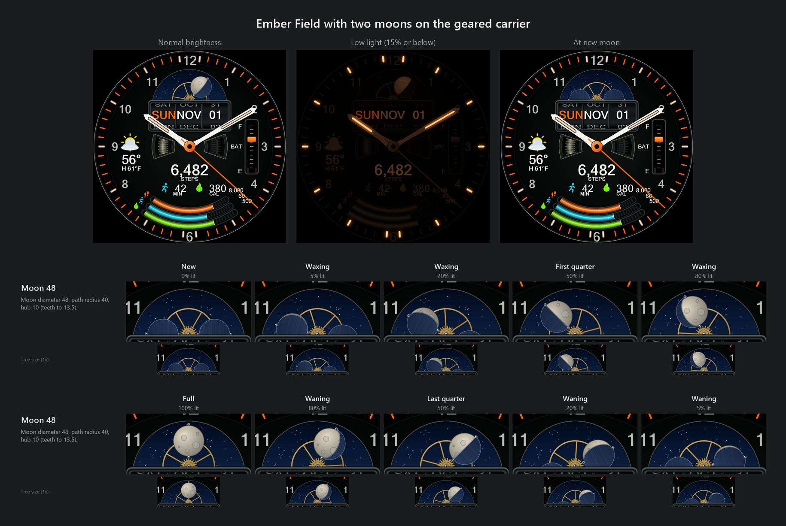
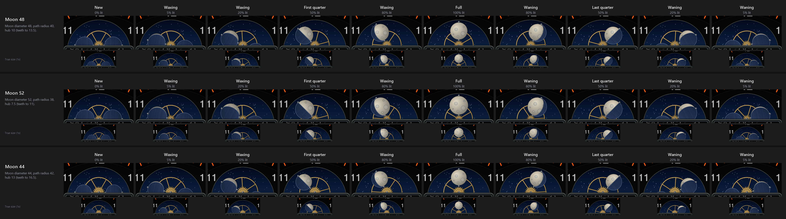
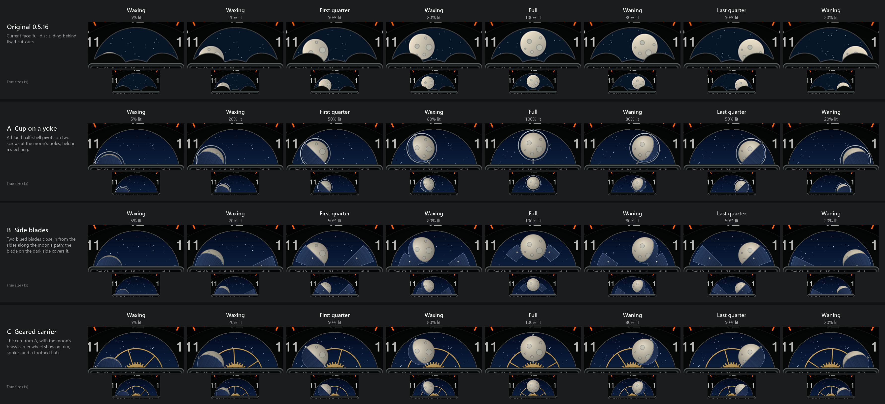
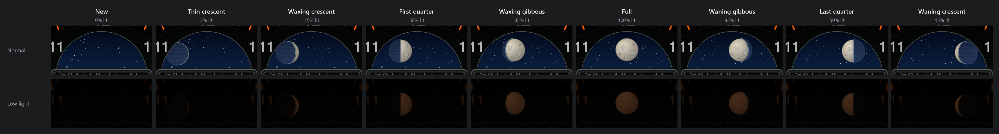
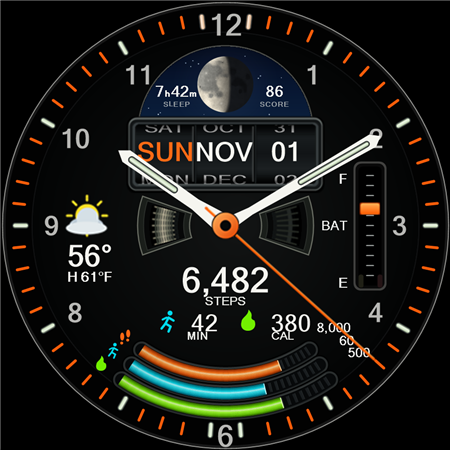
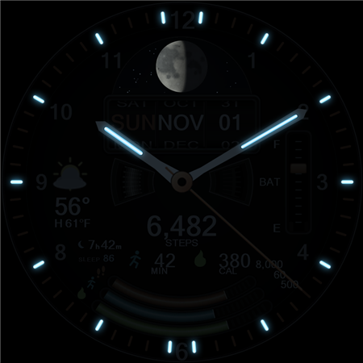
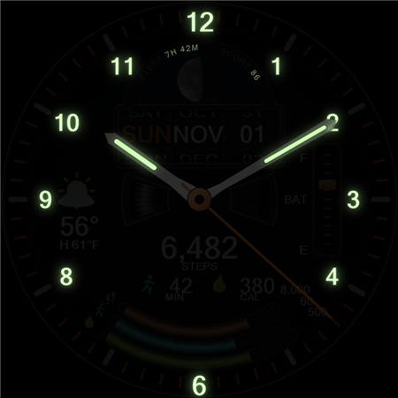
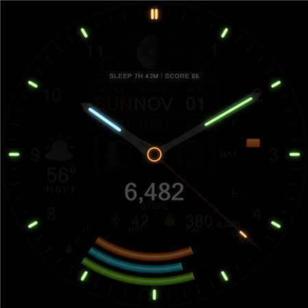

Emberphase: tritium and moon concepts
These are illustrative composites with sample data (1 November 2026), not device screenshots. Low-light images show the pixels the face would draw at 15% brightness or below.
Round 4: two moons on the geared carrier
The brass wheel carries two moons half a turn apart, each with its own blued cup.
At new moon both sit half above the calendar edge, fully covered, one rising at the left and one setting at the right.

Three sizes of moon and wheel (rows: moon 48, 52 and 44), each at 2x with true size underneath:

Moon 48 row · Moon 52 row · Moon 44 row
Round 3: moon window versions (superseded)
The moon rides its carrier in a circle as in the current face; moving mechanical parts hide its dark side, so the visible lit part keeps the true phase shape. Each row shows the window at 2x with the same crops at true size underneath.
- Original 0.5.16: Current face: full disc sliding behind fixed cut-outs. row image
- A Cup on a yoke: A blued half-shell pivots on two screws at the moon's poles, held in a steel ring. row image
- B Side blades: Two blued blades close in from the sides along the moon's path; the blade on the dark side covers it. row image
- C Geared carrier: The cup from A, with the moon's brass carrier wheel showing: rim, spokes and a toothed hub. row image

Round 2: Ember Field (superseded)
Orange tritium tubes on Field's hour layout, with the 12 and 6 numerals kept as on the current dial and flanked by pairs of tubes.
There is no sleep readout.
The moon travels across its window and a blued-steel shade covers exactly its unlit part, so each phase has its true shape and the window is empty at new moon.

Selected sheet (both faces and the moon strip)
Round 1 (superseded)
Five earlier concepts, with sleep readouts (sample: 7 h 42 min, score 86). Top image in each column: normal brightness. Bottom image: low light.
1 Field
Classic military tritium tubes.
12 and 6 numerals kept as on the current dial, each flanked by a pair of tubes (orange at 12, green at 6).


2 Ember
The face's own orange, a warm night dial.
12 and 6 numerals replaced by lume bars (bars at 12, 3, 6 and 9; round lume dots at the other hours).


3 Ice
Cold blue, moonlit.
12 and 6 numerals kept as on the current dial, each flanked by a pair of ice-blue tubes.


4 Heritage
Vintage painted lume instead of glass tubes.
All numerals kept, 12 and 6 included, repainted in lume; they are the hour markers.


5 Reactor
Multi-colour tubes on a near-black instrument dial.
12 and 6 numerals replaced by tube markers (orange double tube at 12, green tube at 6).

Moon phases
Northern-hemisphere view: waxing phases are lit on the right, waning on the left. The faces show the phase for the fixture date.

Contact sheet (all ten faces)